<meta charset="utf-8"><meta name="viewport" content="width=device-width"><style>body{font:16px/1.65 system-ui;color:#21324a;background:#f5f7fb;margin:30px auto;max-width:1400px;padding:0 20px}a{color:#146bbc}article,header{background:white;border:1px solid #d2dbe7;border-radius:12px;margin:20px 0;padding:22px}.images{display:grid;grid-template-columns:repeat(3,1fr);gap:12px}img{width:100%}button{padding:8px 16px;margin:6px;cursor:pointer}.badge{border-radius:6px;background:#e6f2f6;padding:4px 8px}small{color:#4a5c71}@media(max-width:750px){.images{grid-template-columns:1fr}}</style><title>香港15个素材：修复及质量复核</title><header><h1>15 个香港素材：先恢复完整模型，再看质量</h1><p>已纠正全批轴向，补回两例丢失的62个三角面。15份完整场景均可离线旋转；现有建模观察工具14份可读，1份透明材质明确不支持。</p><p>2份优先复核候选，其余保留作局部可读或低信息样本。建筑用途均未逐栋核实，本页没有BIM生成或整案验收。</p><p><a href="../README.md">方法、原件与限制</a> · <a href="review.json">转换与浏览器核验</a> · <a href="visual_review.json">逐栋判读</a></p><button onclick="filter('')">全部15份</button><button onclick="filter('优先复核')">优先复核2份</button><button onclick="filter('局部可读')">局部可读</button><button onclick="filter('不优先')">不优先</button></header><article data-grade="优先复核"><h2>B416111881201063A0 <span class="badge">优先复核</span></h2><p>补齐四材质后，长立面多排窗和层间带可辨，体量较规则；低层受树木遮挡，具体用途与入口仍待核。</p><p>宽 × 深 × 高：64.48 × 30.25 × 32.11 m · 4材质网格 / 170三角面 · 观察工具：pass</p><div class="images"><div>旧错误转换预览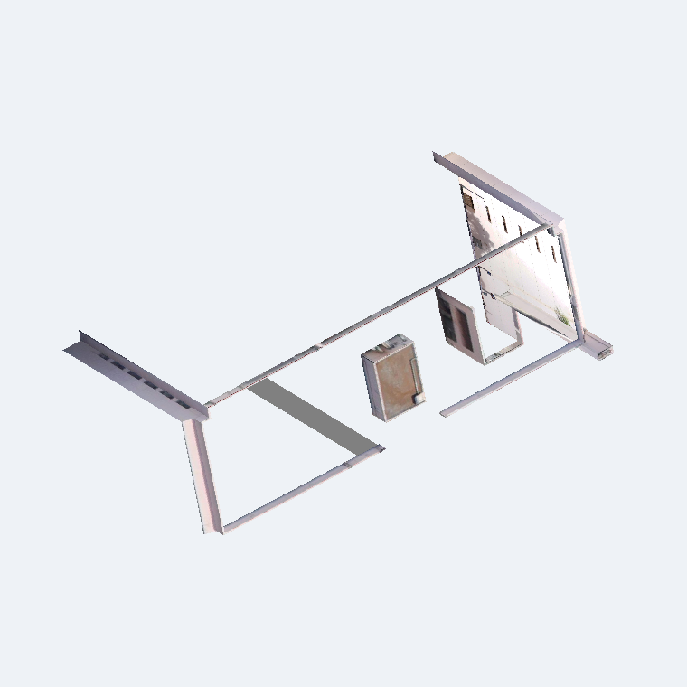</div><div>完整转换 A 面<a href="B416111881201063A0/viewer.html">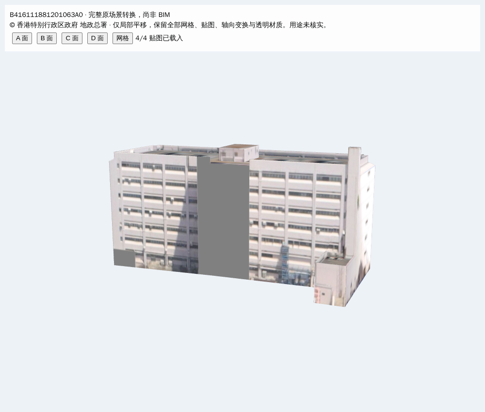</a></div><div>完整转换 C 面<a href="B416111881201063A0/viewer.html">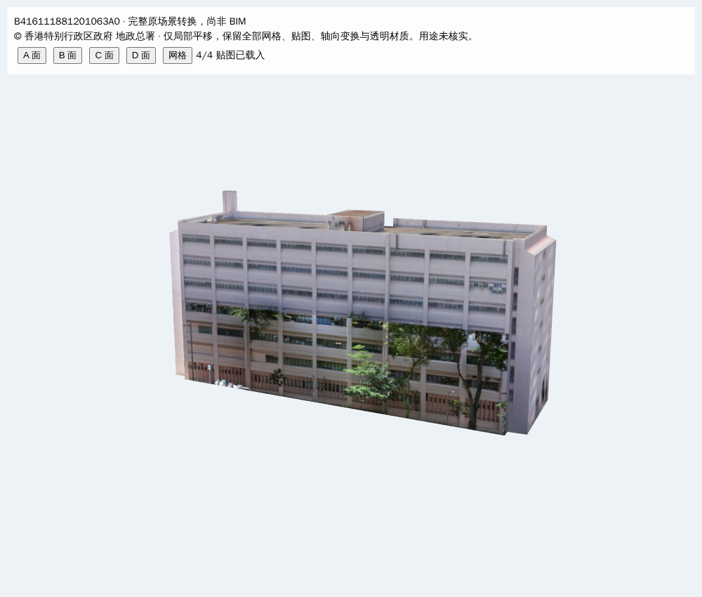</a></div></div><p><a href="B416111881201063A0/viewer.html">旋转查看完整模型</a> · <a href="B416111881201063A0/view_B.png">B面</a> · <a href="B416111881201063A0/view_D.png">D面</a> · <a href="B416111881201063A0/input.glb">修复GLB</a> · <a href="B416111881201063A0/repair.json">转换依据</a></p><small>© 香港特别行政区政府 地政总署；仅转换与局部坐标平移，未补面、未增强纹理。用途和物理窗界仍须核实。</small></article><article data-grade="优先复核"><h2>B349992122201063A0 <span class="badge">优先复核</span></h2><p>两主要立面可见逐排开口，支持局部窗/层观察；另一面模糊且有灰面，底层遮挡，复杂度高于规则首例。</p><p>宽 × 深 × 高：21.83 × 25.21 × 33.40 m · 1材质网格 / 263三角面 · 观察工具：pass</p><div class="images"><div>旧错误转换预览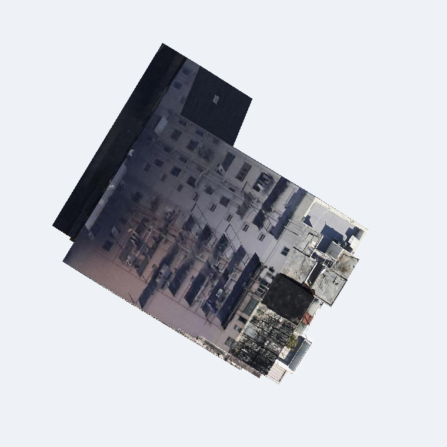</div><div>完整转换 A 面<a href="B349992122201063A0/viewer.html">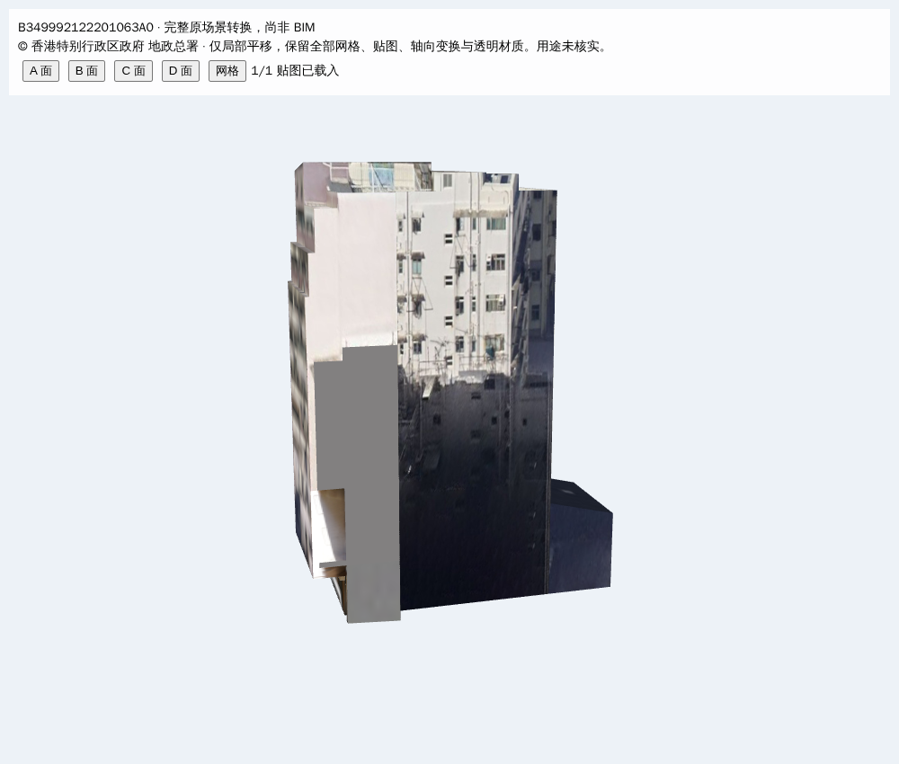</a></div><div>完整转换 C 面<a href="B349992122201063A0/viewer.html">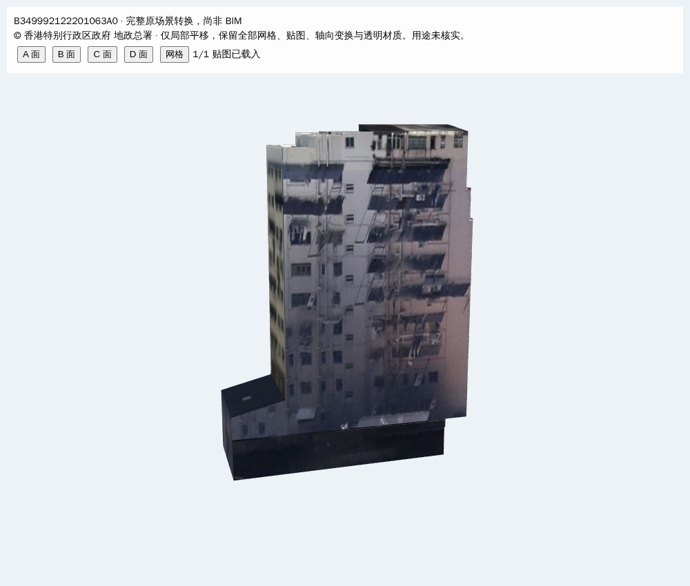</a></div></div><p><a href="B349992122201063A0/viewer.html">旋转查看完整模型</a> · <a href="B349992122201063A0/view_B.png">B面</a> · <a href="B349992122201063A0/view_D.png">D面</a> · <a href="B349992122201063A0/input.glb">修复GLB</a> · <a href="B349992122201063A0/repair.json">转换依据</a></p><small>© 香港特别行政区政府 地政总署；仅转换与局部坐标平移，未补面、未增强纹理。用途和物理窗界仍须核实。</small></article><article data-grade="局部可读"><h2>B419431906102063A0 <span class="badge">局部可读</span></h2><p>低矮退台体量可见，立面受树遮挡且部分模糊；原84.4m高层标签错误，实际是长边84.4m。</p><p>宽 × 深 × 高：72.38 × 84.44 × 20.59 m · 1材质网格 / 721三角面 · 观察工具：pass</p><div class="images"><div>旧错误转换预览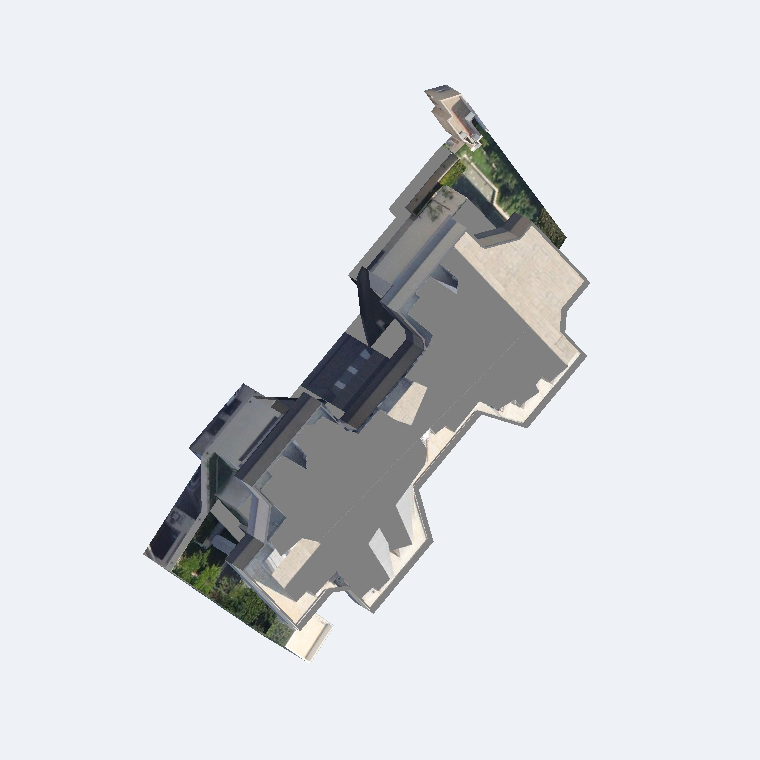</div><div>完整转换 A 面<a href="B419431906102063A0/viewer.html">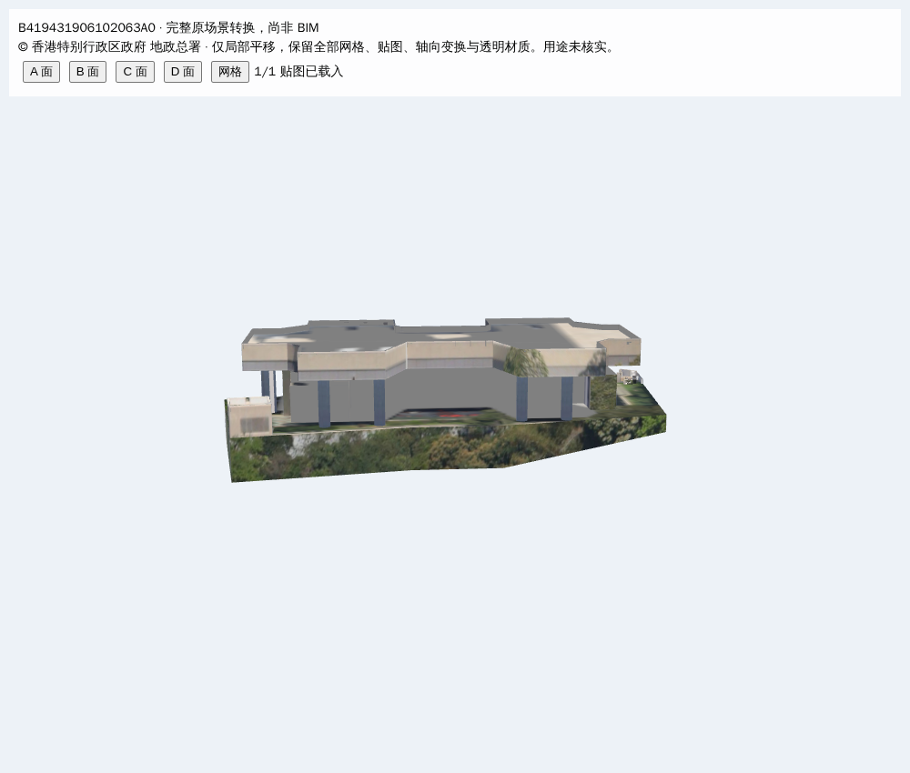</a></div><div>完整转换 C 面<a href="B419431906102063A0/viewer.html">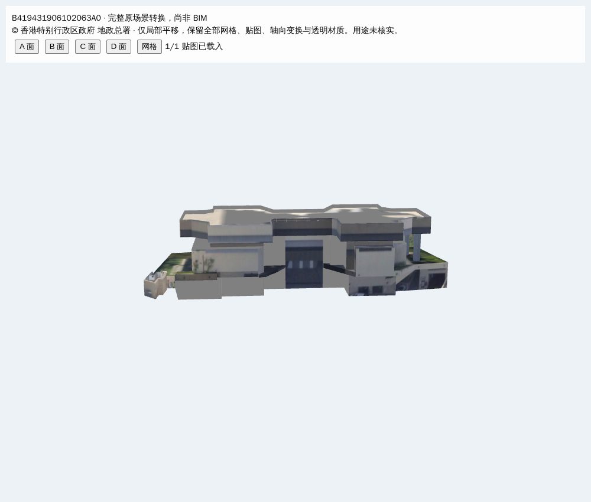</a></div></div><p><a href="B419431906102063A0/viewer.html">旋转查看完整模型</a> · <a href="B419431906102063A0/view_B.png">B面</a> · <a href="B419431906102063A0/view_D.png">D面</a> · <a href="B419431906102063A0/input.glb">修复GLB</a> · <a href="B419431906102063A0/repair.json">转换依据</a></p><small>© 香港特别行政区政府 地政总署；仅转换与局部坐标平移，未补面、未增强纹理。用途和物理窗界仍须核实。</small></article><article data-grade="局部可读"><h2>B213323371901062A0 <span class="badge">局部可读</span></h2><p>正面少数开口可见，另外两向纹理明显拉伸/模糊；小体量但信息不充分，用途未证。</p><p>宽 × 深 × 高：3.81 × 8.02 × 4.08 m · 1材质网格 / 76三角面 · 观察工具：pass</p><div class="images"><div>旧错误转换预览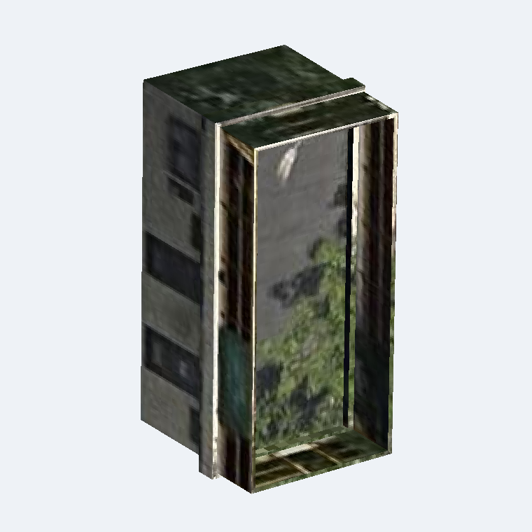</div><div>完整转换 A 面<a href="B213323371901062A0/viewer.html">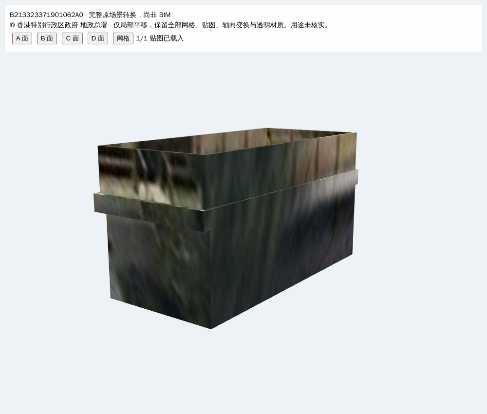</a></div><div>完整转换 C 面<a href="B213323371901062A0/viewer.html">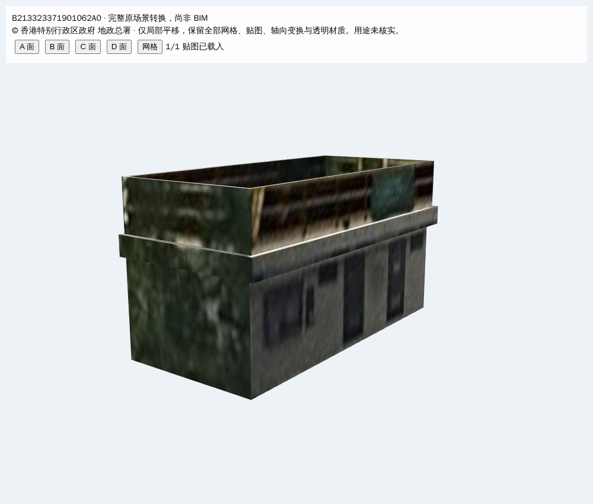</a></div></div><p><a href="B213323371901062A0/viewer.html">旋转查看完整模型</a> · <a href="B213323371901062A0/view_B.png">B面</a> · <a href="B213323371901062A0/view_D.png">D面</a> · <a href="B213323371901062A0/input.glb">修复GLB</a> · <a href="B213323371901062A0/repair.json">转换依据</a></p><small>© 香港特别行政区政府 地政总署；仅转换与局部坐标平移，未补面、未增强纹理。用途和物理窗界仍须核实。</small></article><article data-grade="局部可读"><h2>B212263385501063A0 <span class="badge">局部可读</span></h2><p>高塔窗排与外挑形态明显，但近重复细节复杂且顶部/底层证据有限；可作后续压力例，不是低层大平面。</p><p>宽 × 深 × 高：21.48 × 14.21 × 83.70 m · 1材质网格 / 6836三角面 · 观察工具：pass</p><div class="images"><div>旧错误转换预览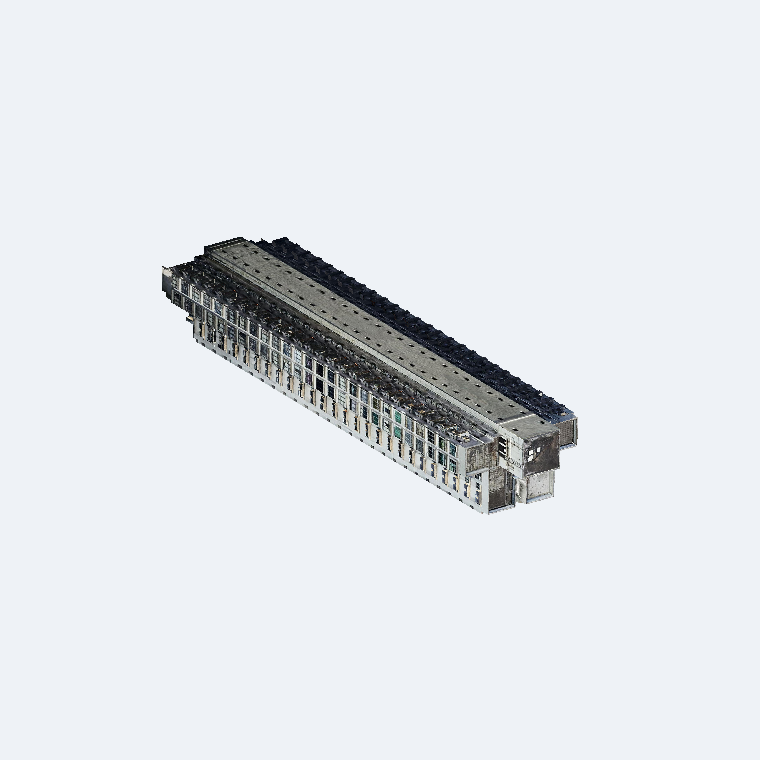</div><div>完整转换 A 面<a href="B212263385501063A0/viewer.html">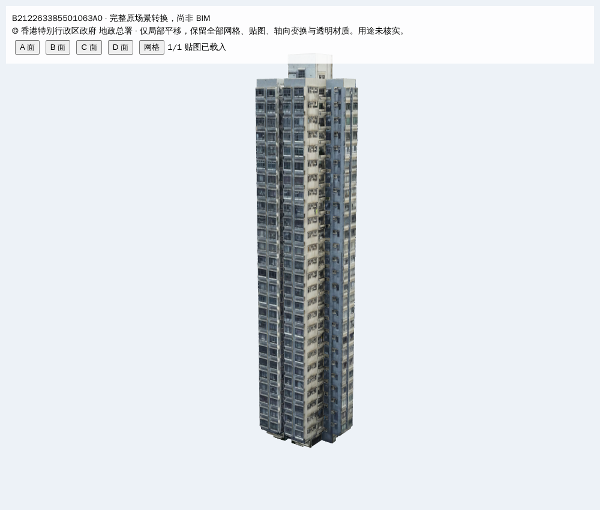</a></div><div>完整转换 C 面<a href="B212263385501063A0/viewer.html">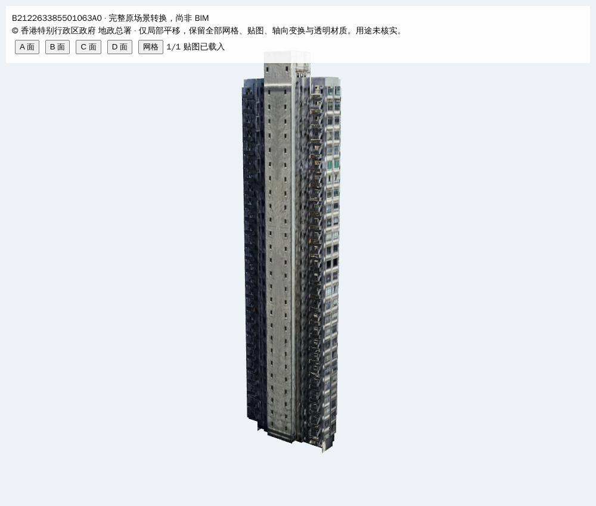</a></div></div><p><a href="B212263385501063A0/viewer.html">旋转查看完整模型</a> · <a href="B212263385501063A0/view_B.png">B面</a> · <a href="B212263385501063A0/view_D.png">D面</a> · <a href="B212263385501063A0/input.glb">修复GLB</a> · <a href="B212263385501063A0/repair.json">转换依据</a></p><small>© 香港特别行政区政府 地政总署；仅转换与局部坐标平移，未补面、未增强纹理。用途和物理窗界仍须核实。</small></article><article data-grade="局部可读"><h2>B351842110002063A0 <span class="badge">局部可读</span></h2><p>低矮建筑正面能见招牌/开口，屋面及背侧灰填充；原35.7m高楼标签错误，实际是平面长边。</p><p>宽 × 深 × 高：36.59 × 35.74 × 8.81 m · 1材质网格 / 245三角面 · 观察工具：pass</p><div class="images"><div>旧错误转换预览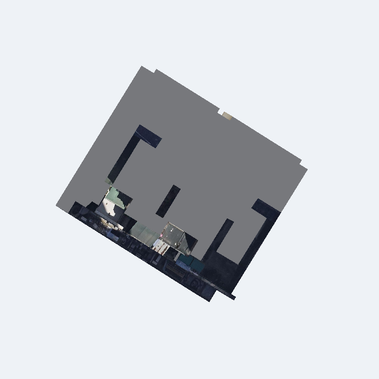</div><div>完整转换 A 面<a href="B351842110002063A0/viewer.html">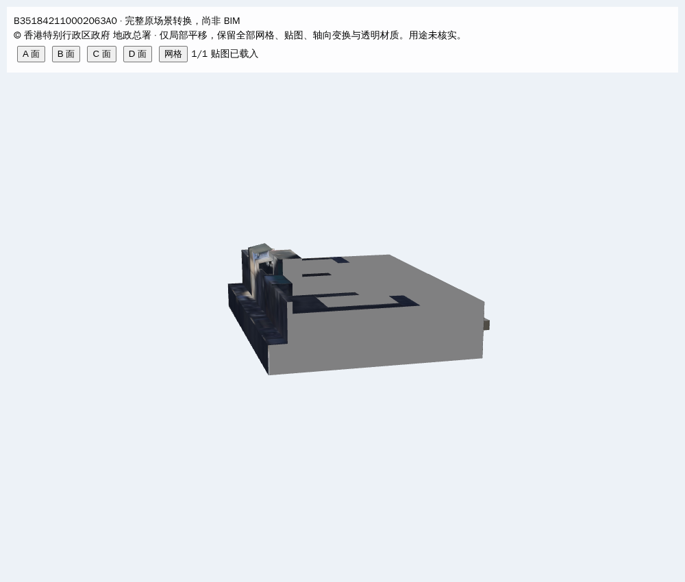</a></div><div>完整转换 C 面<a href="B351842110002063A0/viewer.html">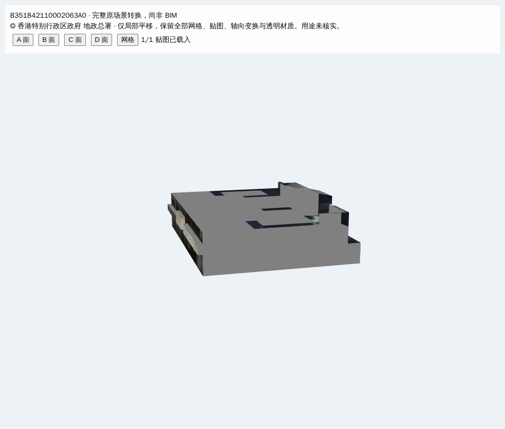</a></div></div><p><a href="B351842110002063A0/viewer.html">旋转查看完整模型</a> · <a href="B351842110002063A0/view_B.png">B面</a> · <a href="B351842110002063A0/view_D.png">D面</a> · <a href="B351842110002063A0/input.glb">修复GLB</a> · <a href="B351842110002063A0/repair.json">转换依据</a></p><small>© 香港特别行政区政府 地政总署；仅转换与局部坐标平移，未补面、未增强纹理。用途和物理窗界仍须核实。</small></article><article data-grade="局部可读"><h2>B353631509302063A0 <span class="badge">局部可读</span></h2><p>低体量混合立面局部可读，大片灰面/植被和幕墙反射；不能沿用高层办公标签。</p><p>宽 × 深 × 高：54.63 × 46.82 × 20.58 m · 1材质网格 / 434三角面 · 观察工具：pass</p><div class="images"><div>旧错误转换预览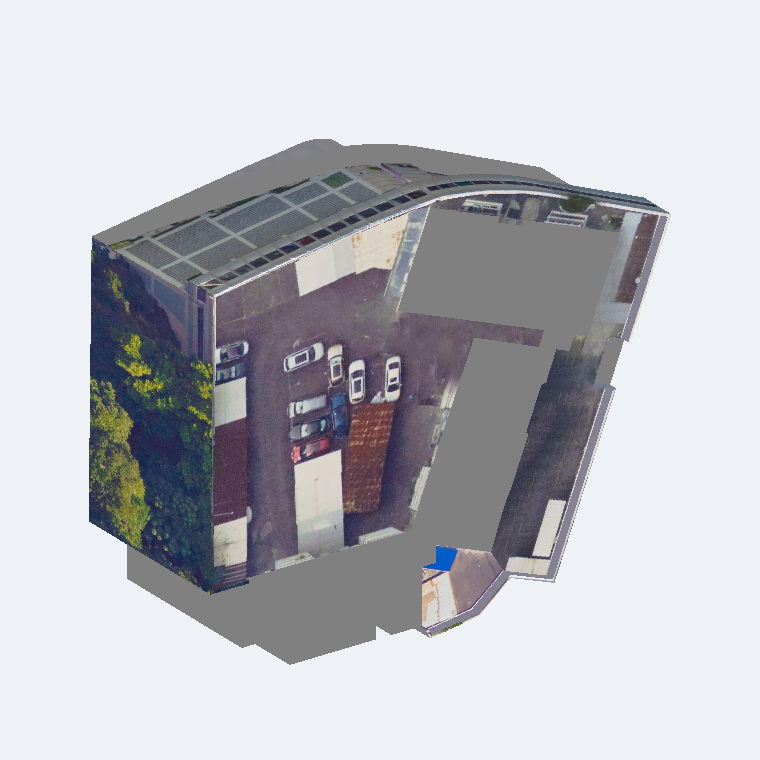</div><div>完整转换 A 面<a href="B353631509302063A0/viewer.html">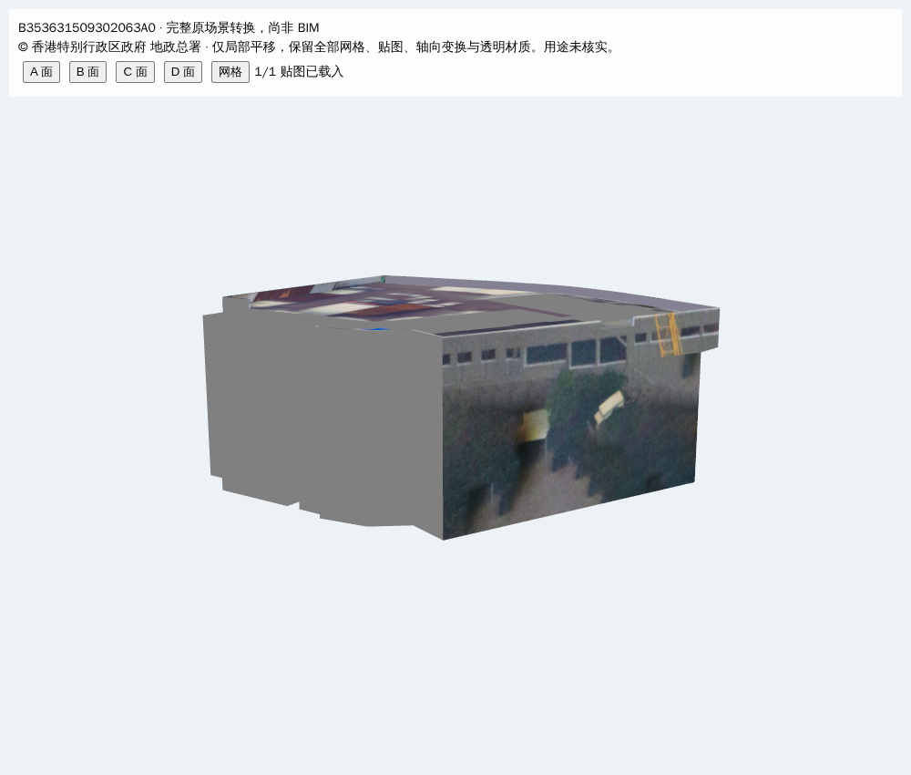</a></div><div>完整转换 C 面<a href="B353631509302063A0/viewer.html">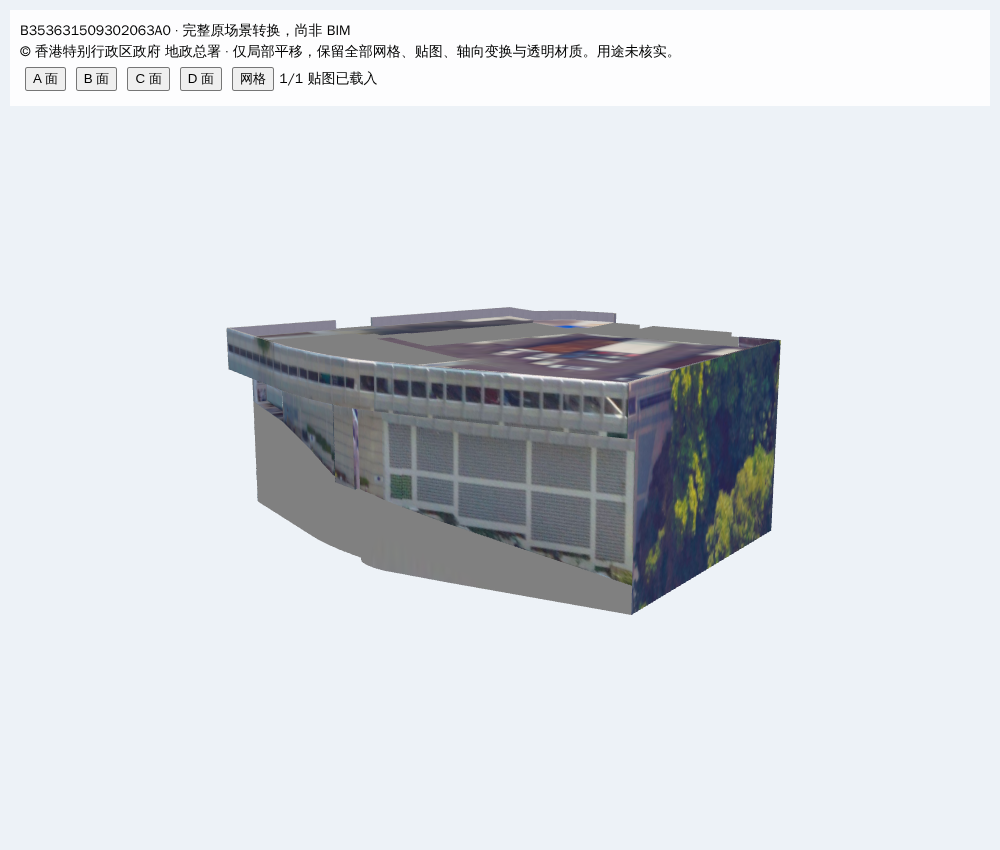</a></div></div><p><a href="B353631509302063A0/viewer.html">旋转查看完整模型</a> · <a href="B353631509302063A0/view_B.png">B面</a> · <a href="B353631509302063A0/view_D.png">D面</a> · <a href="B353631509302063A0/input.glb">修复GLB</a> · <a href="B353631509302063A0/repair.json">转换依据</a></p><small>© 香港特别行政区政府 地政总署；仅转换与局部坐标平移，未补面、未增强纹理。用途和物理窗界仍须核实。</small></article><article data-grade="局部可读"><h2>B359571551401063A0 <span class="badge">局部可读</span></h2><p>高窄建筑两侧水平开口带可辨，另侧纹理较模糊；不是原标注的低矮长条，首层和用途仍待核。</p><p>宽 × 深 × 高：10.69 × 13.48 × 69.38 m · 1材质网格 / 118三角面 · 观察工具：pass</p><div class="images"><div>旧错误转换预览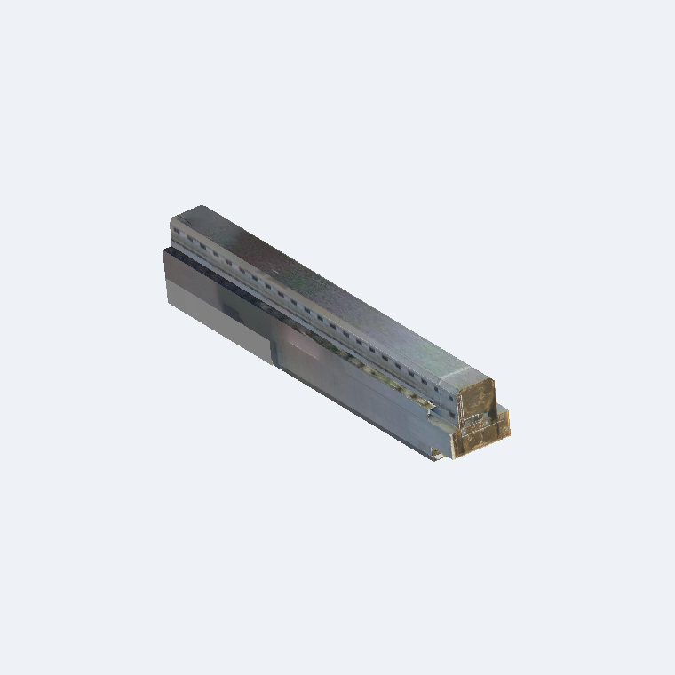</div><div>完整转换 A 面<a href="B359571551401063A0/viewer.html">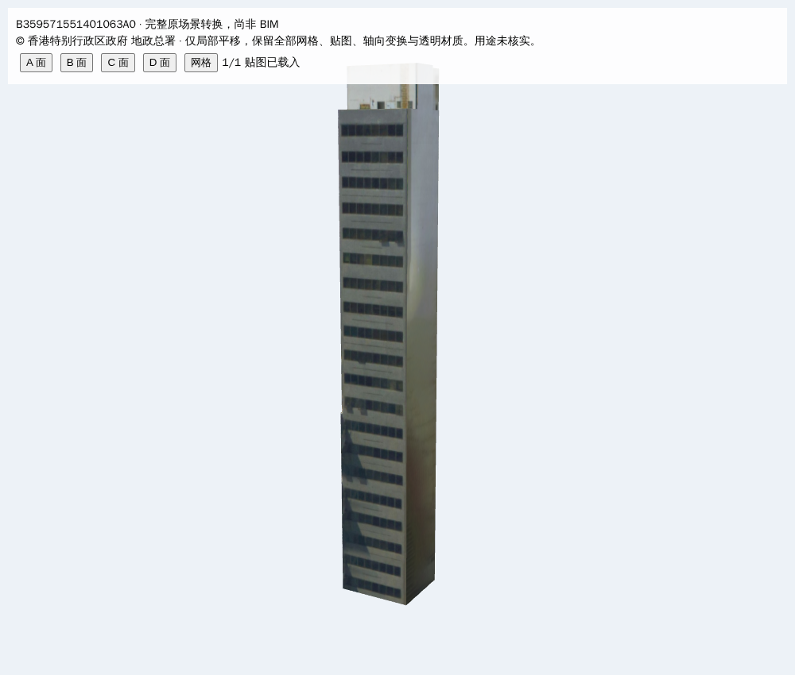</a></div><div>完整转换 C 面<a href="B359571551401063A0/viewer.html">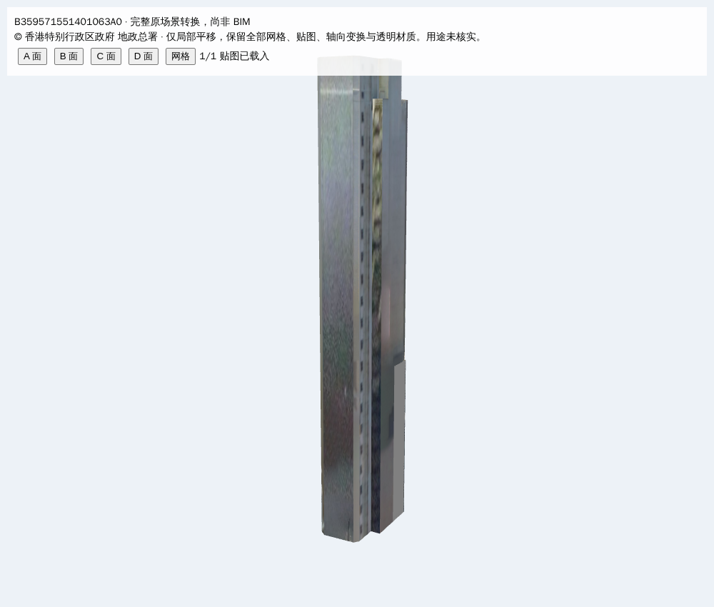</a></div></div><p><a href="B359571551401063A0/viewer.html">旋转查看完整模型</a> · <a href="B359571551401063A0/view_B.png">B面</a> · <a href="B359571551401063A0/view_D.png">D面</a> · <a href="B359571551401063A0/input.glb">修复GLB</a> · <a href="B359571551401063A0/repair.json">转换依据</a></p><small>© 香港特别行政区政府 地政总署；仅转换与局部坐标平移，未补面、未增强纹理。用途和物理窗界仍须核实。</small></article><article data-grade="不优先"><h2>B415681874001063A0 <span class="badge">不优先</span></h2><p>四面纹理模糊或被植被覆盖，无法可靠指出窗/入口；只宜保留为低信息反例。</p><p>宽 × 深 × 高：7.31 × 7.56 × 3.60 m · 1材质网格 / 10三角面 · 观察工具：pass</p><div class="images"><div>旧错误转换预览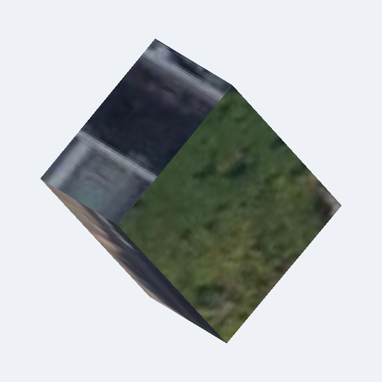</div><div>完整转换 A 面<a href="B415681874001063A0/viewer.html">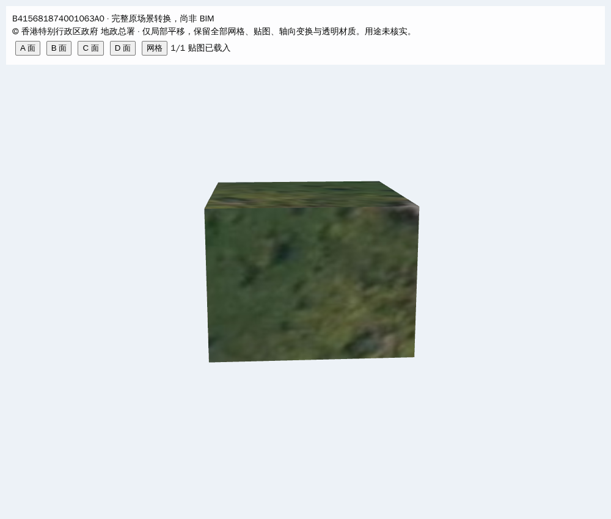</a></div><div>完整转换 C 面<a href="B415681874001063A0/viewer.html">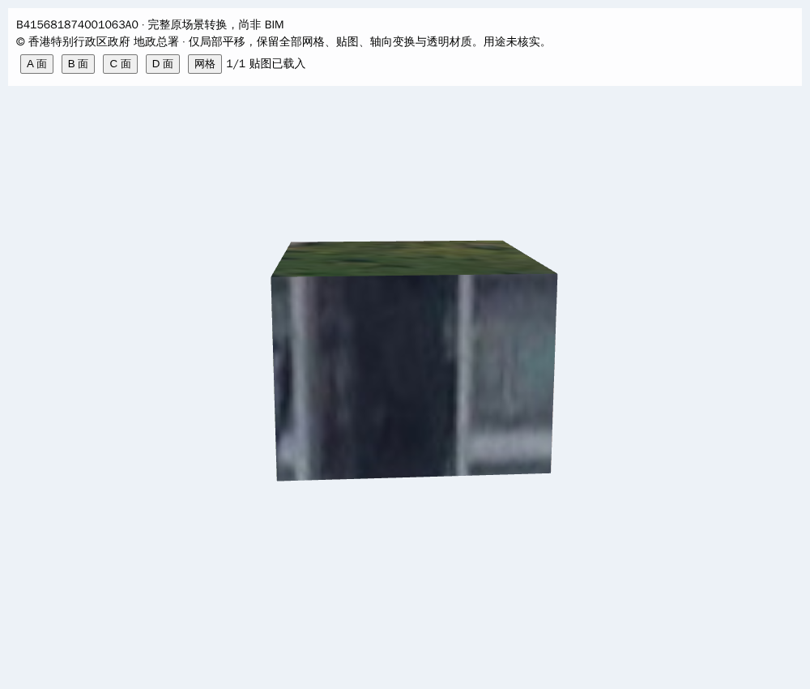</a></div></div><p><a href="B415681874001063A0/viewer.html">旋转查看完整模型</a> · <a href="B415681874001063A0/view_B.png">B面</a> · <a href="B415681874001063A0/view_D.png">D面</a> · <a href="B415681874001063A0/input.glb">修复GLB</a> · <a href="B415681874001063A0/repair.json">转换依据</a></p><small>© 香港特别行政区政府 地政总署；仅转换与局部坐标平移，未补面、未增强纹理。用途和物理窗界仍须核实。</small></article><article data-grade="不优先"><h2>B338831602701063A0 <span class="badge">不优先</span></h2><p>细长对象，大面积灰面和模糊色带，楼层/窗难以可靠分辨；不是已确认的单层体量。</p><p>宽 × 深 × 高：7.17 × 7.79 × 15.64 m · 1材质网格 / 14三角面 · 观察工具：pass</p><div class="images"><div>旧错误转换预览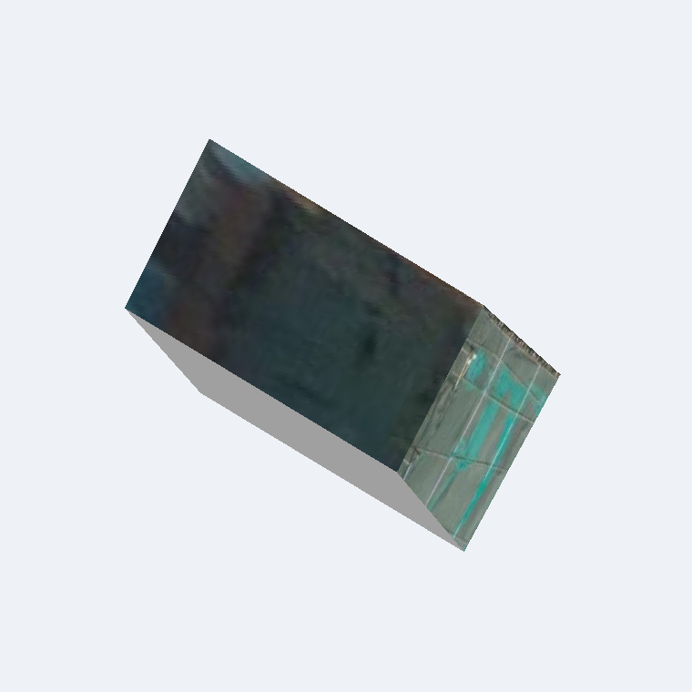</div><div>完整转换 A 面<a href="B338831602701063A0/viewer.html">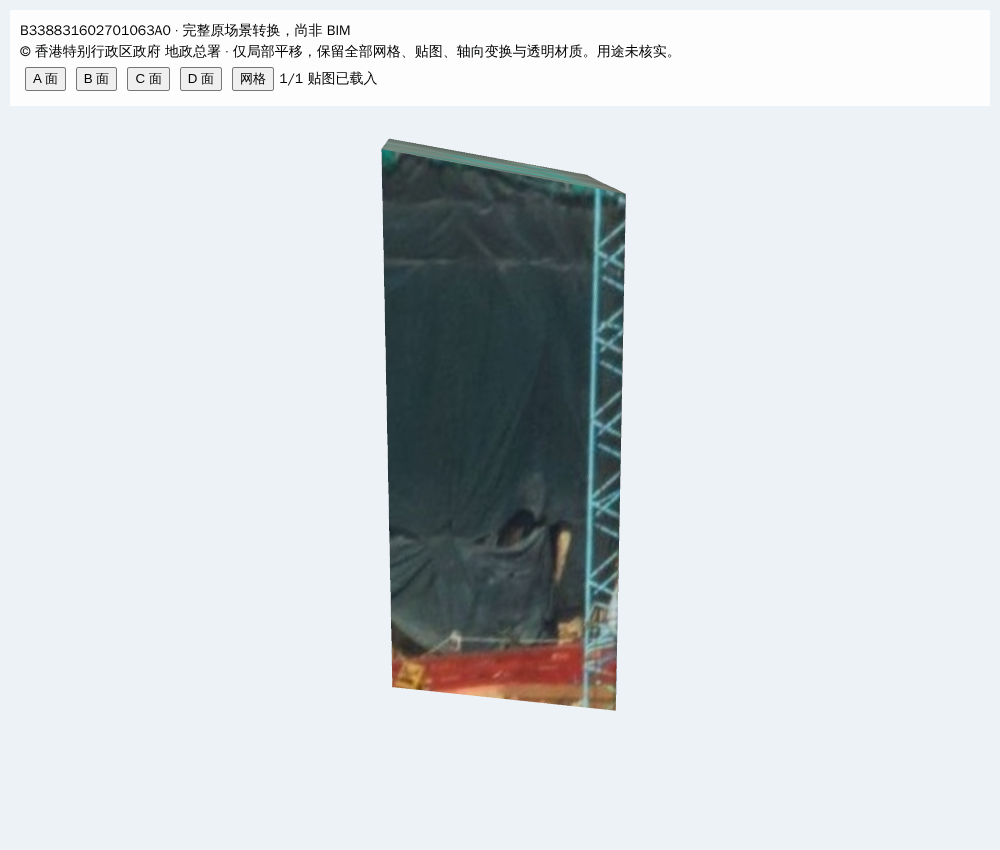</a></div><div>完整转换 C 面<a href="B338831602701063A0/viewer.html">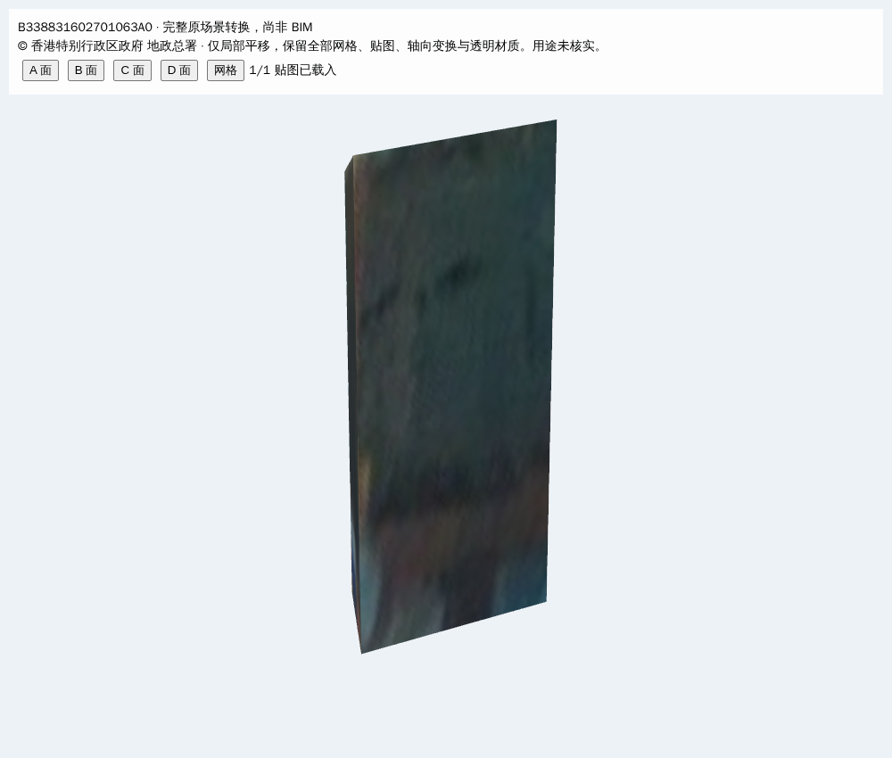</a></div></div><p><a href="B338831602701063A0/viewer.html">旋转查看完整模型</a> · <a href="B338831602701063A0/view_B.png">B面</a> · <a href="B338831602701063A0/view_D.png">D面</a> · <a href="B338831602701063A0/input.glb">修复GLB</a> · <a href="B338831602701063A0/repair.json">转换依据</a></p><small>© 香港特别行政区政府 地政总署；仅转换与局部坐标平移，未补面、未增强纹理。用途和物理窗界仍须核实。</small></article><article data-grade="不优先"><h2>B338311587601063A0 <span class="badge">不优先</span></h2><p>灰面及严重拉伸/模糊纹理占主导，不能用21面推定标准层重复。</p><p>宽 × 深 × 高：15.61 × 15.28 × 13.08 m · 1材质网格 / 21三角面 · 观察工具：pass</p><div class="images"><div>旧错误转换预览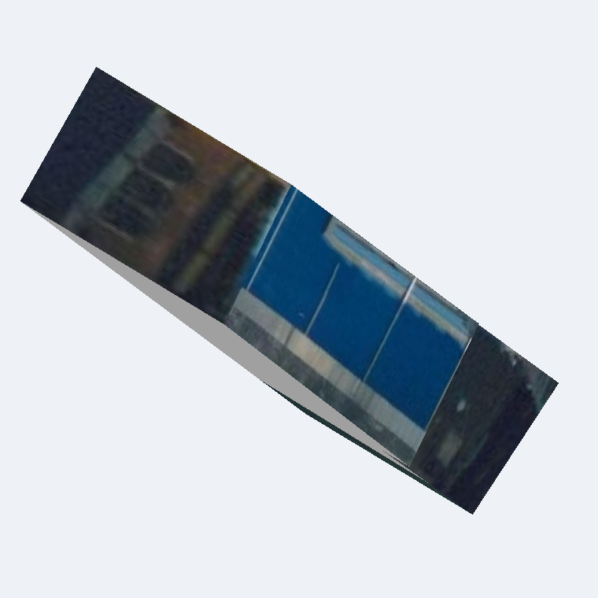</div><div>完整转换 A 面<a href="B338311587601063A0/viewer.html">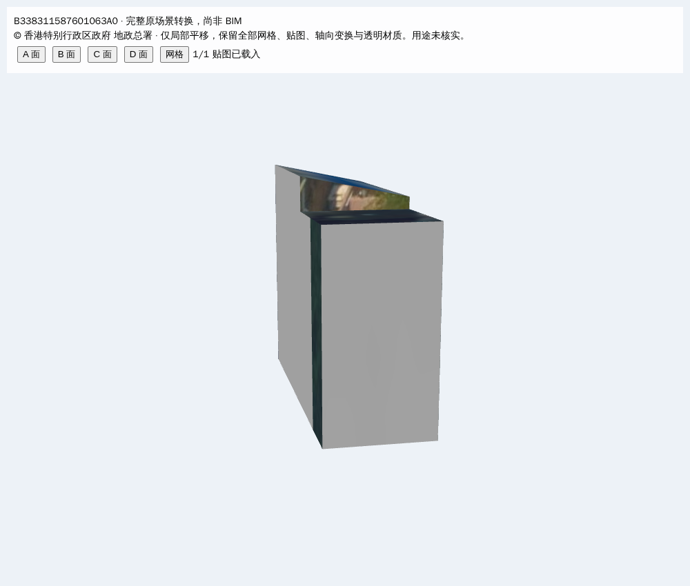</a></div><div>完整转换 C 面<a href="B338311587601063A0/viewer.html">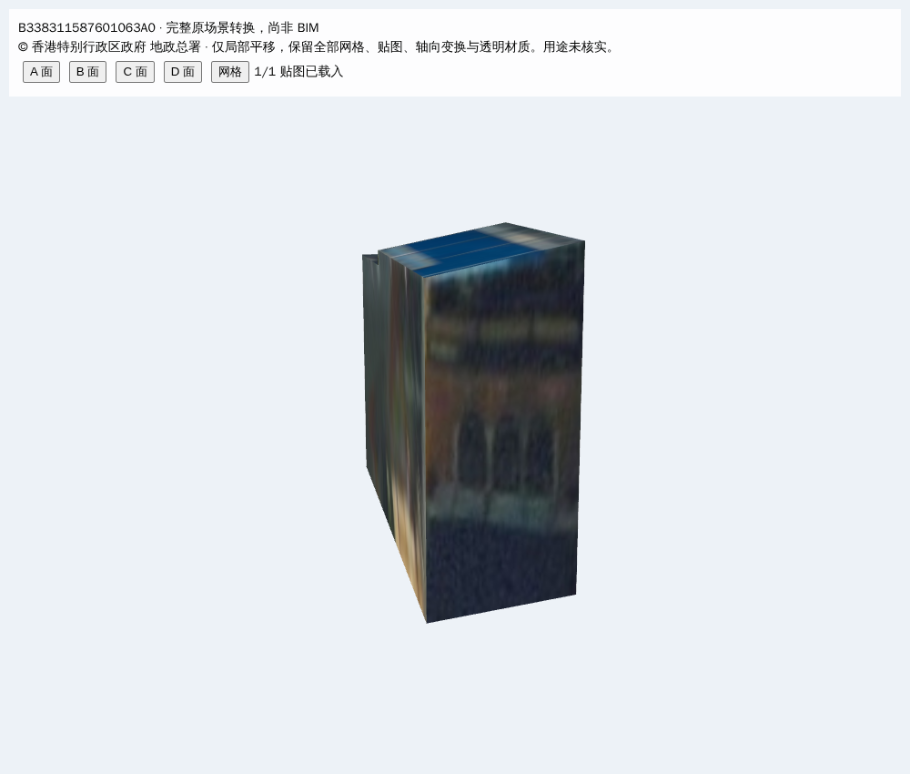</a></div></div><p><a href="B338311587601063A0/viewer.html">旋转查看完整模型</a> · <a href="B338311587601063A0/view_B.png">B面</a> · <a href="B338311587601063A0/view_D.png">D面</a> · <a href="B338311587601063A0/input.glb">修复GLB</a> · <a href="B338311587601063A0/repair.json">转换依据</a></p><small>© 香港特别行政区政府 地政总署；仅转换与局部坐标平移，未补面、未增强纹理。用途和物理窗界仍须核实。</small></article><article data-grade="不优先"><h2>B342781599201063A0 <span class="badge">不优先</span></h2><p>高塔及低基座可见，立面暗且大面积灰面；保留透明材质后现观察器不支持，完整浏览器可看。</p><p>宽 × 深 × 高：50.76 × 45.10 × 98.44 m · 2材质网格 / 781三角面 · 观察工具：unsupported</p><div class="images"><div>旧错误转换预览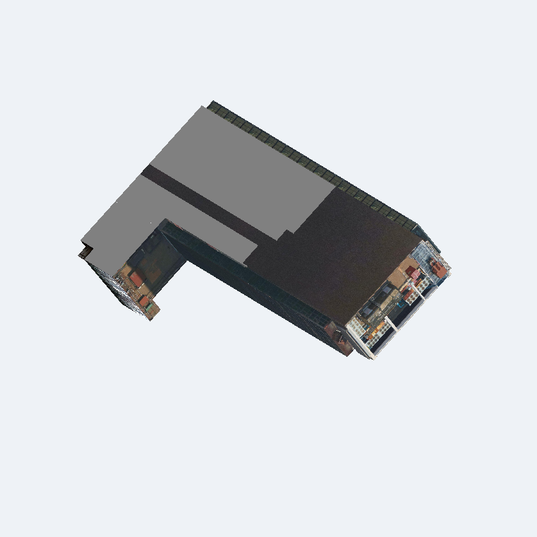</div><div>完整转换 A 面<a href="B342781599201063A0/viewer.html">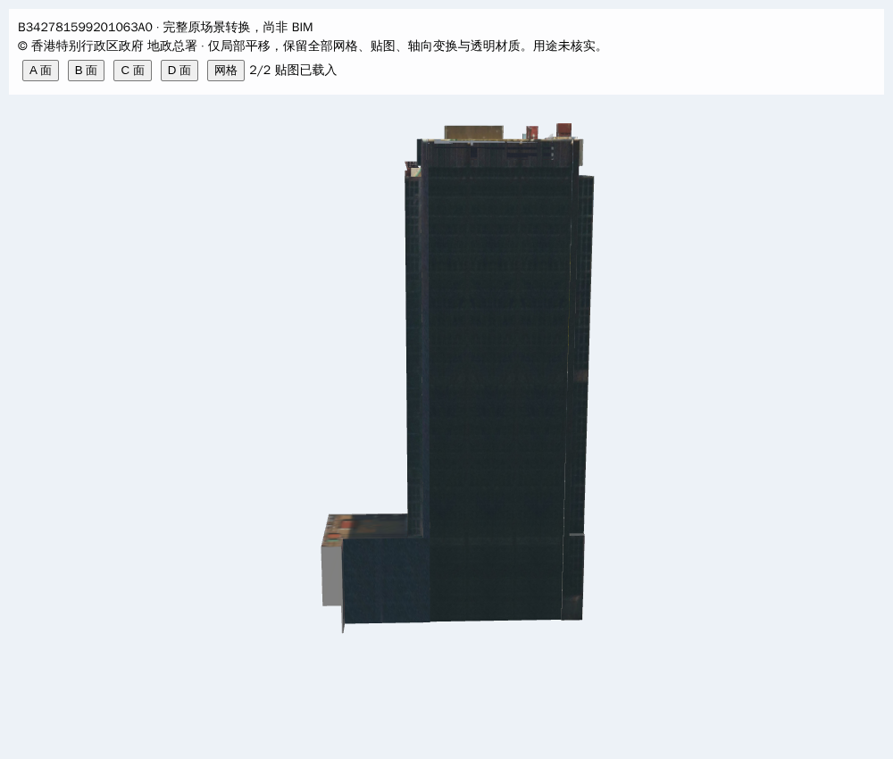</a></div><div>完整转换 C 面<a href="B342781599201063A0/viewer.html">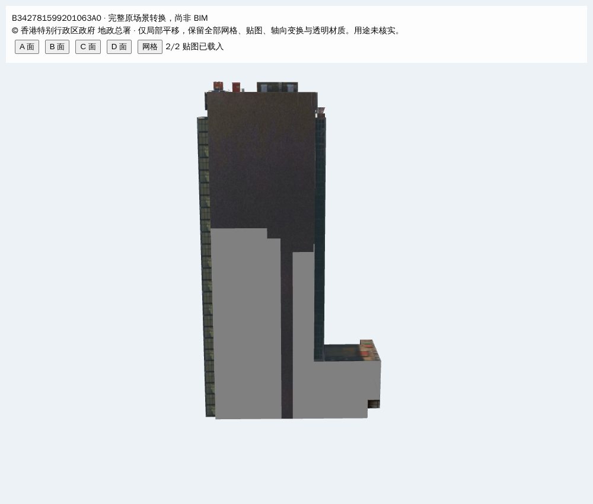</a></div></div><p><a href="B342781599201063A0/viewer.html">旋转查看完整模型</a> · <a href="B342781599201063A0/view_B.png">B面</a> · <a href="B342781599201063A0/view_D.png">D面</a> · <a href="B342781599201063A0/input.glb">修复GLB</a> · <a href="B342781599201063A0/repair.json">转换依据</a></p><small>© 香港特别行政区政府 地政总署；仅转换与局部坐标平移，未补面、未增强纹理。用途和物理窗界仍须核实。</small></article><article data-grade="不优先"><h2>B352801986901063A0 <span class="badge">不优先</span></h2><p>只有窄立面保留部分窗，大片灰面；单层商业标签错误，形体是高窄体。</p><p>宽 × 深 × 高：13.95 × 7.05 × 29.36 m · 1材质网格 / 142三角面 · 观察工具：pass</p><div class="images"><div>旧错误转换预览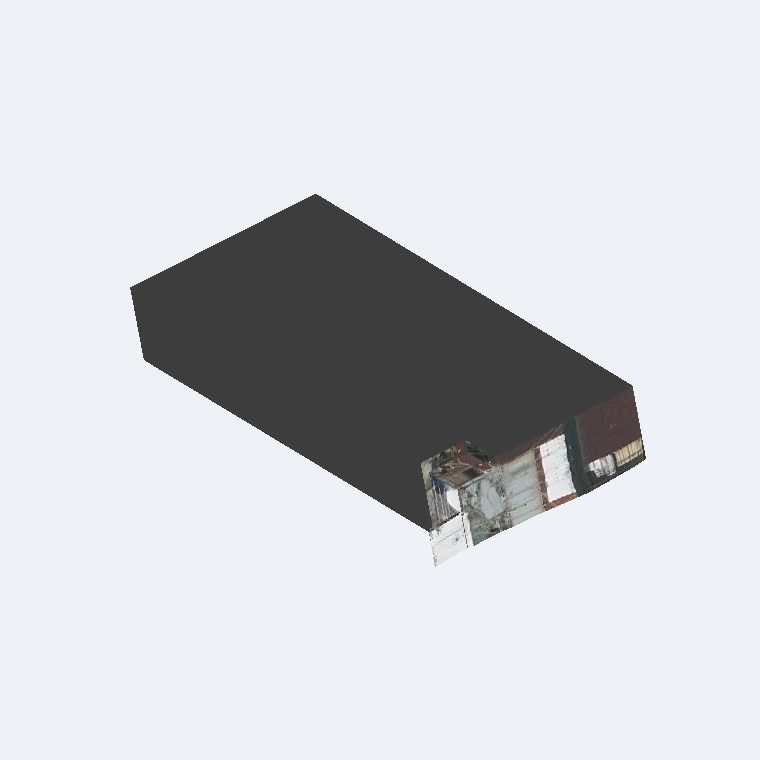</div><div>完整转换 A 面<a href="B352801986901063A0/viewer.html">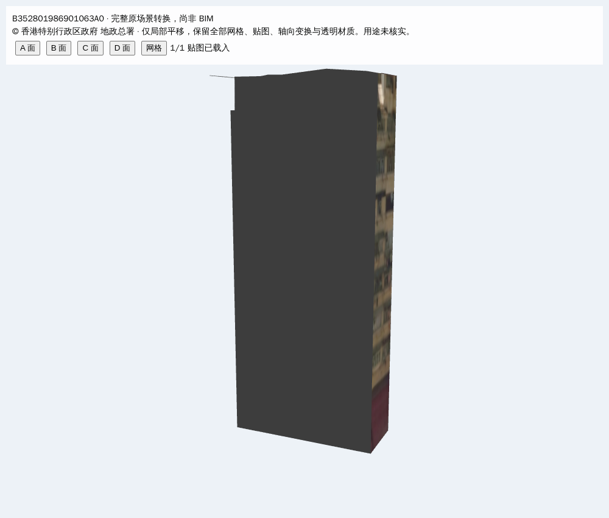</a></div><div>完整转换 C 面<a href="B352801986901063A0/viewer.html">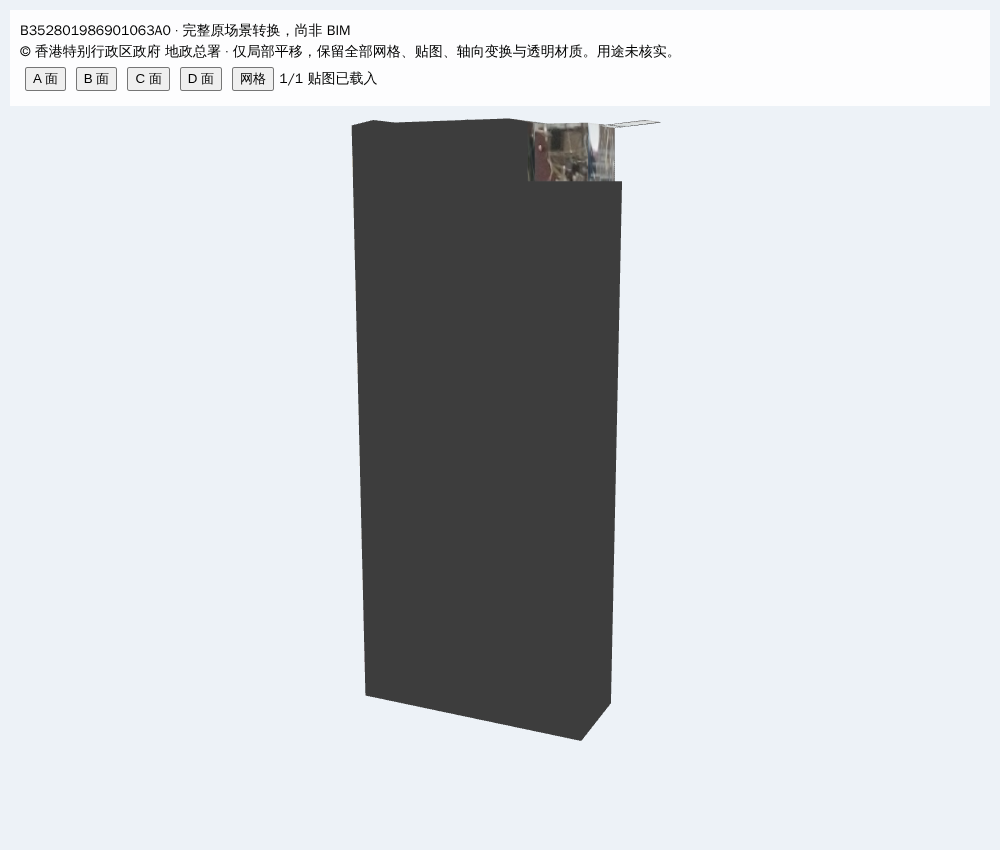</a></div></div><p><a href="B352801986901063A0/viewer.html">旋转查看完整模型</a> · <a href="B352801986901063A0/view_B.png">B面</a> · <a href="B352801986901063A0/view_D.png">D面</a> · <a href="B352801986901063A0/input.glb">修复GLB</a> · <a href="B352801986901063A0/repair.json">转换依据</a></p><small>© 香港特别行政区政府 地政总署；仅转换与局部坐标平移，未补面、未增强纹理。用途和物理窗界仍须核实。</small></article><article data-grade="不优先"><h2>B353902007902063A0 <span class="badge">不优先</span></h2><p>低矮长体的图像拉伸和复杂屋顶/临时构件混杂，不能作窄高简单样本。</p><p>宽 × 深 × 高：15.22 × 35.47 × 10.95 m · 1材质网格 / 928三角面 · 观察工具：pass</p><div class="images"><div>旧错误转换预览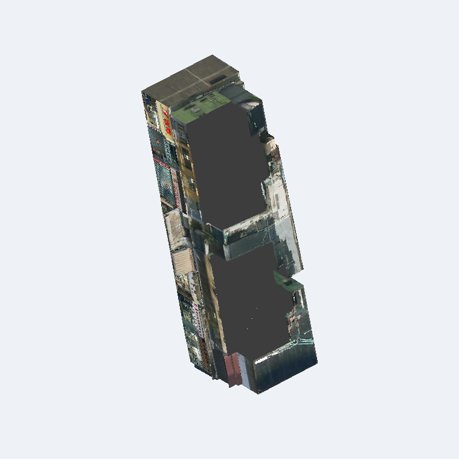</div><div>完整转换 A 面<a href="B353902007902063A0/viewer.html">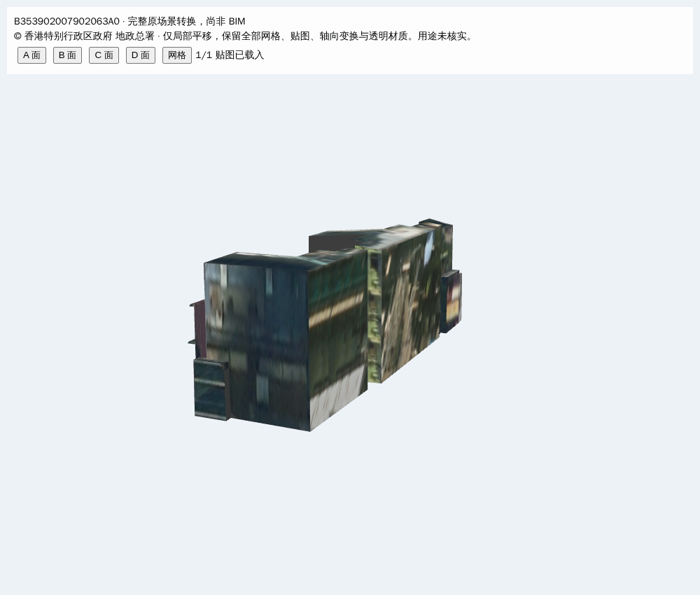</a></div><div>完整转换 C 面<a href="B353902007902063A0/viewer.html">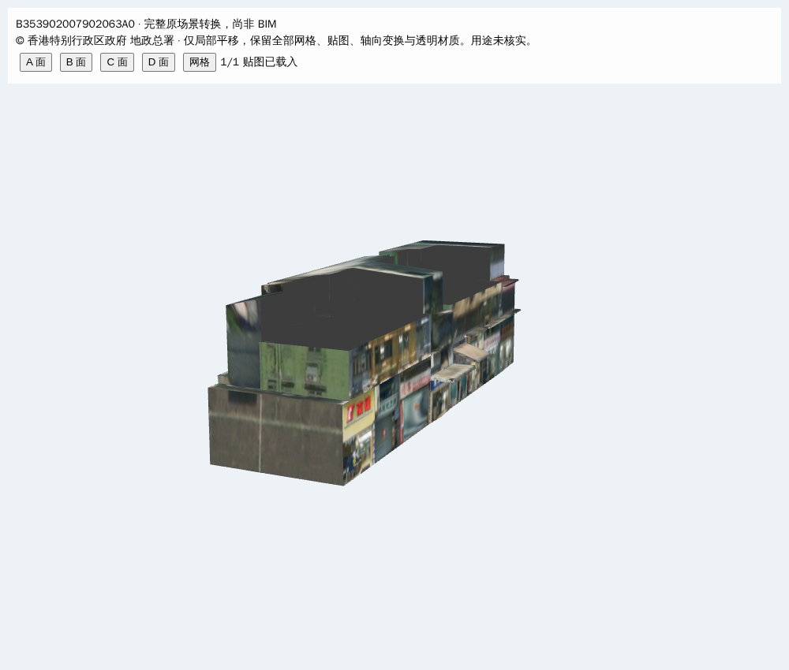</a></div></div><p><a href="B353902007902063A0/viewer.html">旋转查看完整模型</a> · <a href="B353902007902063A0/view_B.png">B面</a> · <a href="B353902007902063A0/view_D.png">D面</a> · <a href="B353902007902063A0/input.glb">修复GLB</a> · <a href="B353902007902063A0/repair.json">转换依据</a></p><small>© 香港特别行政区政府 地政总署；仅转换与局部坐标平移，未补面、未增强纹理。用途和物理窗界仍须核实。</small></article><article data-grade="不优先"><h2>B346922109101063A0 <span class="badge">不优先</span></h2><p>大面灰填充，仅一窄侧能见局部窗，四面输入明显不足。</p><p>宽 × 深 × 高：18.45 × 17.48 × 31.80 m · 1材质网格 / 718三角面 · 观察工具：pass</p><div class="images"><div>旧错误转换预览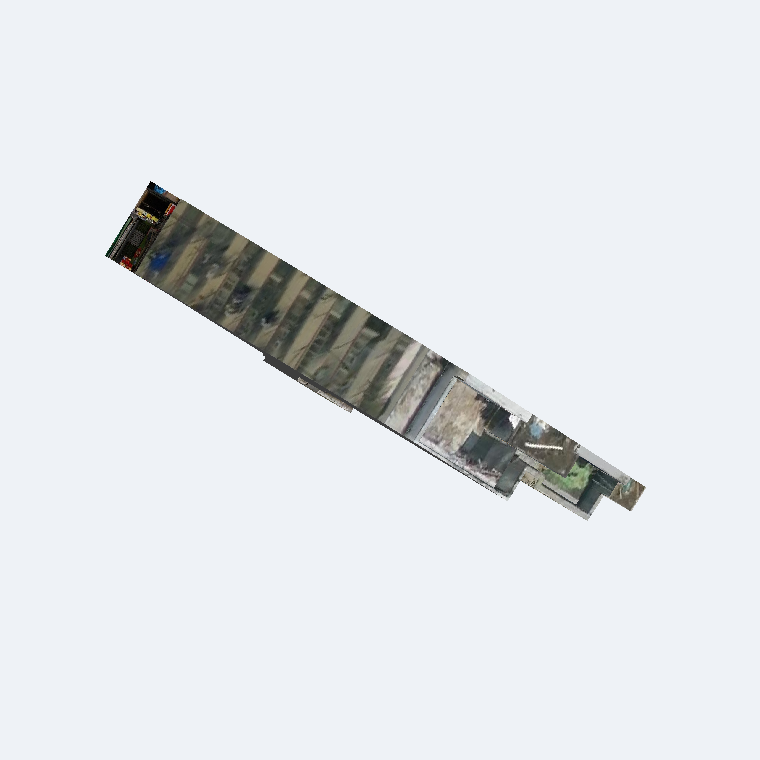</div><div>完整转换 A 面<a href="B346922109101063A0/viewer.html">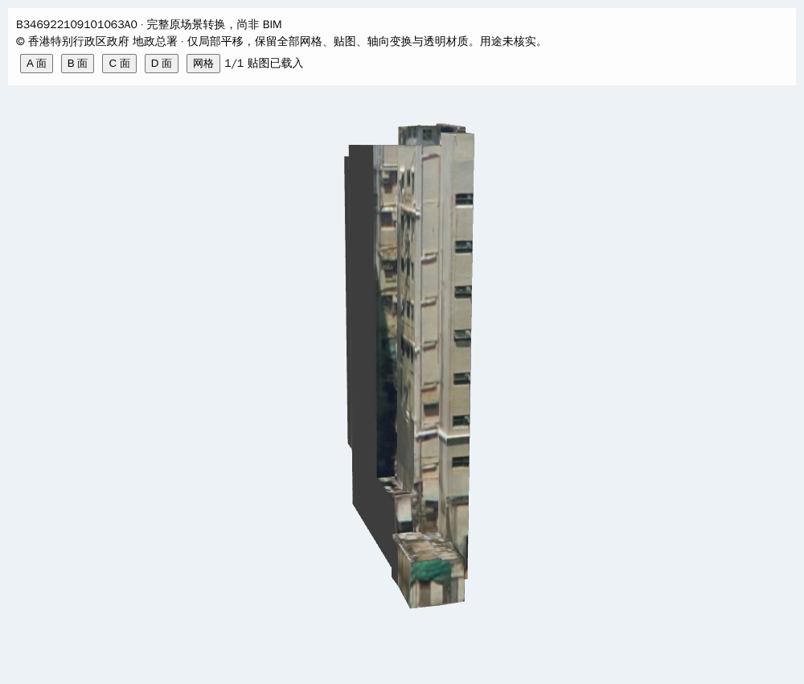</a></div><div>完整转换 C 面<a href="B346922109101063A0/viewer.html">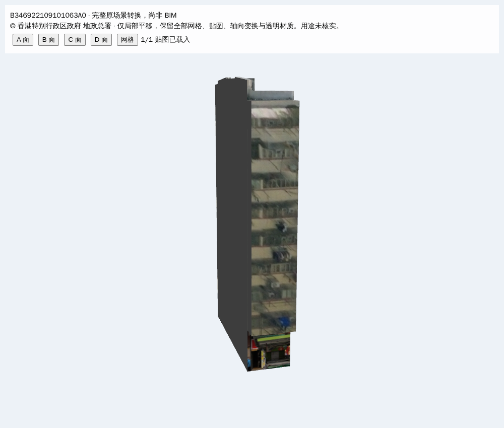</a></div></div><p><a href="B346922109101063A0/viewer.html">旋转查看完整模型</a> · <a href="B346922109101063A0/view_B.png">B面</a> · <a href="B346922109101063A0/view_D.png">D面</a> · <a href="B346922109101063A0/input.glb">修复GLB</a> · <a href="B346922109101063A0/repair.json">转换依据</a></p><small>© 香港特别行政区政府 地政总署；仅转换与局部坐标平移，未补面、未增强纹理。用途和物理窗界仍须核实。</small></article><script>function filter(g){document.querySelectorAll('article').forEach(x=>x.hidden=g&&x.dataset.grade!==g)}</script>